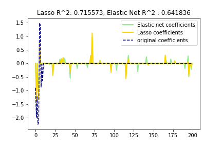

<!DOCTYPE html>
<html>
  <head>
    <meta charset="utf-8" />
    <title>elastic_net</title><script type="text/x-mathjax-config">
  MathJax.Hub.Config({
    jax: ["input/TeX","output/HTML-CSS"],
    extensions: ["[a11y]/accessibility-menu.js"],
    'HTML-CSS': {
      availableFonts: [],
      webFont: 'TeX',
      undefinedFamily: "serif",
      mtextFontInherit: true,
    },
    TeX: {
  "Macros": {},
  "equationNumbers": {},
  "extensions": [
    "AMSmath.js",
    "AMSsymbols.js",
    "noErrors.js",
    "noUndefined.js"
  ]
},
    showMathMenu: true
  });
</script>
<script type="text/javascript" src="https://cdnjs.cloudflare.com/ajax/libs/mathjax/2.7.4/MathJax.js"></script>
    <style>.emoji {
  max-width: 1em !important;
}
del {
  text-decoration: none;
  position: relative;
}
del::after {
  border-bottom: 1px solid black;
  content: '';
  left: 0;
  position: absolute;
  right: 0;
  top: 50%;
}
ul.contains-task-list li.task-list-item {
  position: relative;
  list-style-type: none;
}
ul.contains-task-list li.task-list-item input.task-list-item-checkbox {
  position: absolute;
  transform: translateX(-100%);
  width: 30px;
}
span.critic.comment {
  position: relative;
}
span.critic.comment::before {
  content: '\1f4ac';
  position: initial;
}
span.critic.comment > span {
  display: none;
}
span.critic.comment:hover > span {
  display: initial;
  position: absolute;
  top: 100%;
  left: 0;
  border: 1px solid;
  border-radius: 5px;
  max-height: 4em;
  overflow: auto;
}
span.critic.comment:focus > span {
  display: initial;
  text-decoration: underline;
  position: initial;
  top: auto;
  left: auto;
  border: initial;
  border-radius: initial;
}
table {
  border-collapse: collapse;
  border-spacing: 0;
  background-color: transparent;
}

body {
  padding: 2em;
  font-size: 1.2em;
  color: #abb2bf;
  background-color: #282c34;
  overflow: auto;
}
body > :first-child,
body > div.update-preview > :first-child {
  margin-top: 0;
}
body > p,
body > div.update-preview > p {
  margin-top: 0;
  margin-bottom: 1.5em;
}
body > ul,
body > div.update-preview > ul,
body > ol,
body > div.update-preview > ol {
  margin-bottom: 1.5em;
}
h1,
h2,
h3,
h4,
h5,
h6 {
  line-height: 1.2;
  margin-top: 1.5em;
  margin-bottom: 0.5em;
  color: #ffffff;
}
h1 {
  font-size: 2.4em;
  font-weight: 300;
}
h2 {
  font-size: 1.8em;
  font-weight: 400;
}
h3 {
  font-size: 1.5em;
  font-weight: 500;
}
h4 {
  font-size: 1.2em;
  font-weight: 600;
}
h5 {
  font-size: 1.1em;
  font-weight: 600;
}
h6 {
  font-size: 1em;
  font-weight: 600;
}
strong {
  color: #ffffff;
}
del {
  color: #7c879c;
}
a,
a code {
  color: #528bff;
}
img {
  max-width: 100%;
}
blockquote {
  margin: 1.5em 0;
  font-size: inherit;
  color: #7c879c;
  border-color: #4b5362;
  border-width: 4px;
}
hr {
  margin: 3em 0;
  border-top: 2px dashed #4b5362;
  background: none;
}
table {
  margin: 1.5em 0;
}
th {
  color: #ffffff;
}
th,
td {
  padding: 0.66em 1em;
  border: 1px solid #4b5362;
}
code {
  color: #ffffff;
  background-color: #3a3f4b;
}
pre.editor-colors {
  margin: 1.5em 0;
  padding: 1em;
  font-size: 0.92em;
  border-radius: 3px;
  background-color: #31363f;
}
kbd {
  color: #ffffff;
  border: 1px solid #4b5362;
  border-bottom: 2px solid #3e4451;
  background-color: #3a3f4b;
}

.bracket-matcher .region {
  border-bottom: 1px dotted lime;
  position: absolute;
}
.line-number.bracket-matcher.bracket-matcher {
  color: #abb2bf;
  background-color: #3a3f4b;
}

.spell-check-misspelling .region {
  border-bottom: 2px dotted rgba(255, 51, 51, 0.75);
}
.spell-check-corrections {
  width: 25em !important;
}

pre.editor-colors {
  background-color: #282c34;
  color: #abb2bf;
}
pre.editor-colors .line.cursor-line {
  background-color: rgba(153, 187, 255, 0.04);
}
pre.editor-colors .invisible {
  color: #abb2bf;
}
pre.editor-colors .cursor {
  border-left: 2px solid #528bff;
}
pre.editor-colors .selection .region {
  background-color: #3e4451;
}
pre.editor-colors .bracket-matcher .region {
  border-bottom: 1px solid #528bff;
  box-sizing: border-box;
}
pre.editor-colors .invisible-character {
  color: rgba(171, 178, 191, 0.15);
}
pre.editor-colors .indent-guide {
  color: rgba(171, 178, 191, 0.15);
}
pre.editor-colors .wrap-guide {
  background-color: rgba(171, 178, 191, 0.15);
}
pre.editor-colors .find-result .region.region.region,
pre.editor-colors .current-result .region.region.region {
  border-radius: 2px;
  background-color: rgba(82, 139, 255, 0.24);
  transition: border-color 0.4s;
}
pre.editor-colors .find-result .region.region.region {
  border: 2px solid transparent;
}
pre.editor-colors .current-result .region.region.region {
  border: 2px solid #528bff;
  transition-duration: .1s;
}
pre.editor-colors .gutter .line-number {
  color: #636d83;
  -webkit-font-smoothing: antialiased;
}
pre.editor-colors .gutter .line-number.cursor-line {
  color: #abb2bf;
  background-color: #3a3f4b;
}
pre.editor-colors .gutter .line-number.cursor-line-no-selection {
  background-color: transparent;
}
pre.editor-colors .gutter .line-number .icon-right {
  color: #abb2bf;
}
pre.editor-colors .gutter:not(.git-diff-icon) .line-number.git-line-removed.git-line-removed::before {
  bottom: -3px;
}
pre.editor-colors .gutter:not(.git-diff-icon) .line-number.git-line-removed::after {
  content: "";
  position: absolute;
  left: 0px;
  bottom: 0px;
  width: 25px;
  border-bottom: 1px dotted rgba(224, 82, 82, 0.5);
  pointer-events: none;
}
pre.editor-colors .gutter .line-number.folded,
pre.editor-colors .gutter .line-number:after,
pre.editor-colors .fold-marker:after {
  color: #abb2bf;
}
.syntax--comment {
  color: #5c6370;
  font-style: italic;
}
.syntax--comment .syntax--markup.syntax--link {
  color: #5c6370;
}
.syntax--entity.syntax--name.syntax--type {
  color: #e5c07b;
}
.syntax--entity.syntax--other.syntax--inherited-class {
  color: #98c379;
}
.syntax--keyword {
  color: #c678dd;
}
.syntax--keyword.syntax--control {
  color: #c678dd;
}
.syntax--keyword.syntax--operator {
  color: #abb2bf;
}
.syntax--keyword.syntax--other.syntax--special-method {
  color: #61afef;
}
.syntax--keyword.syntax--other.syntax--unit {
  color: #d19a66;
}
.syntax--storage {
  color: #c678dd;
}
.syntax--storage.syntax--type.syntax--annotation,
.syntax--storage.syntax--type.syntax--primitive {
  color: #c678dd;
}
.syntax--storage.syntax--modifier.syntax--package,
.syntax--storage.syntax--modifier.syntax--import {
  color: #abb2bf;
}
.syntax--constant {
  color: #d19a66;
}
.syntax--constant.syntax--variable {
  color: #d19a66;
}
.syntax--constant.syntax--character.syntax--escape {
  color: #56b6c2;
}
.syntax--constant.syntax--numeric {
  color: #d19a66;
}
.syntax--constant.syntax--other.syntax--color {
  color: #56b6c2;
}
.syntax--constant.syntax--other.syntax--symbol {
  color: #56b6c2;
}
.syntax--variable {
  color: #e06c75;
}
.syntax--variable.syntax--interpolation {
  color: #be5046;
}
.syntax--variable.syntax--parameter {
  color: #abb2bf;
}
.syntax--string {
  color: #98c379;
}
.syntax--string > .syntax--source,
.syntax--string .syntax--embedded {
  color: #abb2bf;
}
.syntax--string.syntax--regexp {
  color: #56b6c2;
}
.syntax--string.syntax--regexp .syntax--source.syntax--ruby.syntax--embedded {
  color: #e5c07b;
}
.syntax--string.syntax--other.syntax--link {
  color: #e06c75;
}
.syntax--punctuation.syntax--definition.syntax--comment {
  color: #5c6370;
}
.syntax--punctuation.syntax--definition.syntax--method-parameters,
.syntax--punctuation.syntax--definition.syntax--function-parameters,
.syntax--punctuation.syntax--definition.syntax--parameters,
.syntax--punctuation.syntax--definition.syntax--separator,
.syntax--punctuation.syntax--definition.syntax--seperator,
.syntax--punctuation.syntax--definition.syntax--array {
  color: #abb2bf;
}
.syntax--punctuation.syntax--definition.syntax--heading,
.syntax--punctuation.syntax--definition.syntax--identity {
  color: #61afef;
}
.syntax--punctuation.syntax--definition.syntax--bold {
  color: #e5c07b;
  font-weight: bold;
}
.syntax--punctuation.syntax--definition.syntax--italic {
  color: #c678dd;
  font-style: italic;
}
.syntax--punctuation.syntax--section.syntax--embedded {
  color: #be5046;
}
.syntax--punctuation.syntax--section.syntax--method,
.syntax--punctuation.syntax--section.syntax--class,
.syntax--punctuation.syntax--section.syntax--inner-class {
  color: #abb2bf;
}
.syntax--support.syntax--class {
  color: #e5c07b;
}
.syntax--support.syntax--type {
  color: #56b6c2;
}
.syntax--support.syntax--function {
  color: #56b6c2;
}
.syntax--support.syntax--function.syntax--any-method {
  color: #61afef;
}
.syntax--entity.syntax--name.syntax--function {
  color: #61afef;
}
.syntax--entity.syntax--name.syntax--class,
.syntax--entity.syntax--name.syntax--type.syntax--class {
  color: #e5c07b;
}
.syntax--entity.syntax--name.syntax--section {
  color: #61afef;
}
.syntax--entity.syntax--name.syntax--tag {
  color: #e06c75;
}
.syntax--entity.syntax--other.syntax--attribute-name {
  color: #d19a66;
}
.syntax--entity.syntax--other.syntax--attribute-name.syntax--id {
  color: #61afef;
}
.syntax--meta.syntax--class {
  color: #e5c07b;
}
.syntax--meta.syntax--class.syntax--body {
  color: #abb2bf;
}
.syntax--meta.syntax--method-call,
.syntax--meta.syntax--method {
  color: #abb2bf;
}
.syntax--meta.syntax--definition.syntax--variable {
  color: #e06c75;
}
.syntax--meta.syntax--link {
  color: #d19a66;
}
.syntax--meta.syntax--require {
  color: #61afef;
}
.syntax--meta.syntax--selector {
  color: #c678dd;
}
.syntax--meta.syntax--separator {
  color: #abb2bf;
}
.syntax--meta.syntax--tag {
  color: #abb2bf;
}
.syntax--underline {
  text-decoration: underline;
}
.syntax--none {
  color: #abb2bf;
}
.syntax--invalid.syntax--deprecated {
  color: #523d14 !important;
  background-color: #e0c285 !important;
}
.syntax--invalid.syntax--illegal {
  color: white !important;
  background-color: #e05252 !important;
}
.syntax--markup.syntax--bold {
  color: #d19a66;
  font-weight: bold;
}
.syntax--markup.syntax--changed {
  color: #c678dd;
}
.syntax--markup.syntax--deleted {
  color: #e06c75;
}
.syntax--markup.syntax--italic {
  color: #c678dd;
  font-style: italic;
}
.syntax--markup.syntax--heading {
  color: #e06c75;
}
.syntax--markup.syntax--heading .syntax--punctuation.syntax--definition.syntax--heading {
  color: #61afef;
}
.syntax--markup.syntax--link {
  color: #56b6c2;
}
.syntax--markup.syntax--inserted {
  color: #98c379;
}
.syntax--markup.syntax--quote {
  color: #d19a66;
}
.syntax--markup.syntax--raw {
  color: #98c379;
}
.syntax--source.syntax--c .syntax--keyword.syntax--operator {
  color: #c678dd;
}
.syntax--source.syntax--cpp .syntax--keyword.syntax--operator {
  color: #c678dd;
}
.syntax--source.syntax--cs .syntax--keyword.syntax--operator {
  color: #c678dd;
}
.syntax--source.syntax--css .syntax--property-name,
.syntax--source.syntax--css .syntax--property-value {
  color: #828997;
}
.syntax--source.syntax--css .syntax--property-name.syntax--support,
.syntax--source.syntax--css .syntax--property-value.syntax--support {
  color: #abb2bf;
}
.syntax--source.syntax--elixir .syntax--source.syntax--embedded.syntax--source {
  color: #abb2bf;
}
.syntax--source.syntax--elixir .syntax--constant.syntax--language,
.syntax--source.syntax--elixir .syntax--constant.syntax--numeric,
.syntax--source.syntax--elixir .syntax--constant.syntax--definition {
  color: #61afef;
}
.syntax--source.syntax--elixir .syntax--variable.syntax--definition,
.syntax--source.syntax--elixir .syntax--variable.syntax--anonymous {
  color: #c678dd;
}
.syntax--source.syntax--elixir .syntax--parameter.syntax--variable.syntax--function {
  color: #d19a66;
  font-style: italic;
}
.syntax--source.syntax--elixir .syntax--quoted {
  color: #98c379;
}
.syntax--source.syntax--elixir .syntax--keyword.syntax--special-method,
.syntax--source.syntax--elixir .syntax--embedded.syntax--section,
.syntax--source.syntax--elixir .syntax--embedded.syntax--source.syntax--empty {
  color: #e06c75;
}
.syntax--source.syntax--elixir .syntax--readwrite.syntax--module .syntax--punctuation {
  color: #e06c75;
}
.syntax--source.syntax--elixir .syntax--regexp.syntax--section,
.syntax--source.syntax--elixir .syntax--regexp.syntax--string {
  color: #be5046;
}
.syntax--source.syntax--elixir .syntax--separator,
.syntax--source.syntax--elixir .syntax--keyword.syntax--operator {
  color: #d19a66;
}
.syntax--source.syntax--elixir .syntax--variable.syntax--constant {
  color: #e5c07b;
}
.syntax--source.syntax--elixir .syntax--array,
.syntax--source.syntax--elixir .syntax--scope,
.syntax--source.syntax--elixir .syntax--section {
  color: #828997;
}
.syntax--source.syntax--gfm .syntax--markup {
  -webkit-font-smoothing: auto;
}
.syntax--source.syntax--gfm .syntax--link .syntax--entity {
  color: #61afef;
}
.syntax--source.syntax--go .syntax--storage.syntax--type.syntax--string {
  color: #c678dd;
}
.syntax--source.syntax--ini .syntax--keyword.syntax--other.syntax--definition.syntax--ini {
  color: #e06c75;
}
.syntax--source.syntax--java .syntax--storage.syntax--modifier.syntax--import {
  color: #e5c07b;
}
.syntax--source.syntax--java .syntax--storage.syntax--type {
  color: #e5c07b;
}
.syntax--source.syntax--java .syntax--keyword.syntax--operator.syntax--instanceof {
  color: #c678dd;
}
.syntax--source.syntax--java-properties .syntax--meta.syntax--key-pair {
  color: #e06c75;
}
.syntax--source.syntax--java-properties .syntax--meta.syntax--key-pair > .syntax--punctuation {
  color: #abb2bf;
}
.syntax--source.syntax--js .syntax--keyword.syntax--operator {
  color: #56b6c2;
}
.syntax--source.syntax--js .syntax--keyword.syntax--operator.syntax--delete,
.syntax--source.syntax--js .syntax--keyword.syntax--operator.syntax--in,
.syntax--source.syntax--js .syntax--keyword.syntax--operator.syntax--of,
.syntax--source.syntax--js .syntax--keyword.syntax--operator.syntax--instanceof,
.syntax--source.syntax--js .syntax--keyword.syntax--operator.syntax--new,
.syntax--source.syntax--js .syntax--keyword.syntax--operator.syntax--typeof,
.syntax--source.syntax--js .syntax--keyword.syntax--operator.syntax--void {
  color: #c678dd;
}
.syntax--source.syntax--ts .syntax--keyword.syntax--operator {
  color: #56b6c2;
}
.syntax--source.syntax--flow .syntax--keyword.syntax--operator {
  color: #56b6c2;
}
.syntax--source.syntax--json .syntax--meta.syntax--structure.syntax--dictionary.syntax--json > .syntax--string.syntax--quoted.syntax--json {
  color: #e06c75;
}
.syntax--source.syntax--json .syntax--meta.syntax--structure.syntax--dictionary.syntax--json > .syntax--string.syntax--quoted.syntax--json > .syntax--punctuation.syntax--string {
  color: #e06c75;
}
.syntax--source.syntax--json .syntax--meta.syntax--structure.syntax--dictionary.syntax--json > .syntax--value.syntax--json > .syntax--string.syntax--quoted.syntax--json,
.syntax--source.syntax--json .syntax--meta.syntax--structure.syntax--array.syntax--json > .syntax--value.syntax--json > .syntax--string.syntax--quoted.syntax--json,
.syntax--source.syntax--json .syntax--meta.syntax--structure.syntax--dictionary.syntax--json > .syntax--value.syntax--json > .syntax--string.syntax--quoted.syntax--json > .syntax--punctuation,
.syntax--source.syntax--json .syntax--meta.syntax--structure.syntax--array.syntax--json > .syntax--value.syntax--json > .syntax--string.syntax--quoted.syntax--json > .syntax--punctuation {
  color: #98c379;
}
.syntax--source.syntax--json .syntax--meta.syntax--structure.syntax--dictionary.syntax--json > .syntax--constant.syntax--language.syntax--json,
.syntax--source.syntax--json .syntax--meta.syntax--structure.syntax--array.syntax--json > .syntax--constant.syntax--language.syntax--json {
  color: #56b6c2;
}
.syntax--ng.syntax--interpolation {
  color: #e06c75;
}
.syntax--ng.syntax--interpolation.syntax--begin,
.syntax--ng.syntax--interpolation.syntax--end {
  color: #61afef;
}
.syntax--ng.syntax--interpolation .syntax--function {
  color: #e06c75;
}
.syntax--ng.syntax--interpolation .syntax--function.syntax--begin,
.syntax--ng.syntax--interpolation .syntax--function.syntax--end {
  color: #61afef;
}
.syntax--ng.syntax--interpolation .syntax--bool {
  color: #d19a66;
}
.syntax--ng.syntax--interpolation .syntax--bracket {
  color: #abb2bf;
}
.syntax--ng.syntax--pipe,
.syntax--ng.syntax--operator {
  color: #abb2bf;
}
.syntax--ng.syntax--tag {
  color: #56b6c2;
}
.syntax--ng.syntax--attribute-with-value .syntax--attribute-name {
  color: #e5c07b;
}
.syntax--ng.syntax--attribute-with-value .syntax--string {
  color: #c678dd;
}
.syntax--ng.syntax--attribute-with-value .syntax--string.syntax--begin,
.syntax--ng.syntax--attribute-with-value .syntax--string.syntax--end {
  color: #abb2bf;
}
.syntax--source.syntax--ruby .syntax--constant.syntax--other.syntax--symbol > .syntax--punctuation {
  color: inherit;
}
.syntax--source.syntax--php .syntax--class.syntax--bracket {
  color: #abb2bf;
}
.syntax--source.syntax--python .syntax--keyword.syntax--operator.syntax--logical.syntax--python {
  color: #c678dd;
}
.syntax--source.syntax--python .syntax--variable.syntax--parameter {
  color: #d19a66;
}

/*
 * Your Stylesheet
 *
 * This stylesheet is loaded when Atom starts up and is reloaded automatically
 * when it is changed and saved.
 *
 * Add your own CSS or Less to fully customize Atom.
 * If you are unfamiliar with Less, you can read more about it here:
 * http://lesscss.org
 */
/*
 * Examples
 * (To see them, uncomment and save)
 */
</style>

  </head>
  <body>
    <h1>Elastic Netを自分なりにまとめてみた(Python, sklearn)</h1>
<p>今回はRidge回帰とLasso回帰のハイブリッドのような形を取っているElasticNetについてまとめる。<br>
以前の記事ではRidgeとLassoについてまとめた。<br>
<a href="https://leck-tech.com/machine-learning/ridge-lasso-sklearn">ラッソ(Lasso)回帰とリッジ(Ridge)回帰をscikit-learnで使ってみる | 創造日記</a></p>
<p>ElasticNetについて書かれた論文はこちら。<br>
<a href="http://citeseerx.ist.psu.edu/viewdoc/summary?doi=10.1.1.124.4696">Regularization and variable selection via the Elastic Net (2005)</a><br>
Lassoについてはこちら。<br>
<a href="https://rss.onlinelibrary.wiley.com/doi/abs/10.1111/j.1467-9868.2011.00771.x">Regression shrinkage and selection via the lasso: a retrospective</a></p>
<h2>概要</h2>
<p>まず、前回の<a href="https://leck-tech.com/machine-learning/ridge-lasso-sklearn">記事</a>で紹介したラッソ(Lasso)回帰とリッジ(Ridge)回帰の特徴についてまとめてみる。</p>
<h3>ラッソ(Lasso)回帰</h3>
<p>ラッソ回帰はいわゆるL1正則化項を付け加えた値を損失として最適化する。<br>
この結果、いらない<strong>特徴量を削る</strong> ことができる(その特徴量に対する係数の値が0になる)利点がある。<br>
たくさんある特徴量から<strong>必要なものだけで</strong> 予測を行いたいときに有用なものとなる。<br>
しかしながら、過剰に特徴量が多く、訓練データの数が少ないと十分な数の特徴量が選択できない(原理的には選択できる特徴量の数の上限と訓練データの数は一致する)。<br>
また、特徴量同士の相関がとても高いときそのうちの片方しか特徴量として使われることがない(両方とも使えない)</p>
<h3>リッジ(Ridge)回帰</h3>
<p>リッジ回帰は係数の値の大きさが発散してしまうのを防ぐ効果がある。<br>
L2正則化項(LassoはL1)を損失に付け加えてそれを最小にするようなモデルの最適化を行う。<br>
リッジ回帰は学習データを過剰に学習してしまい、未知のデータに対してうまく予測ができない過学習の問題を解決する手法として好まれる。</p>
<h3>まとめ</h3>
<p>Ridge回帰は</p>
<ul>
<li>過学習を防ぐ</li>
<li>特徴量の削減(係数を0にする)ことには向いてない<br>
Lasso回帰は</li>
<li>不要な特徴量を削る(次元削減)</li>
<li>相関の高い特徴量をどちらも残すことができない<br>
という特徴がある。</li>
</ul>
<p>この2つの特徴を程よく混ぜようぜってなったのがElasticNetだ。</p>
<h2>定式化</h2>
<p>まず特徴量が <span class="math"><script type="math/tex">p</script></span> 個あるデータが <span class="math"><script type="math/tex">N</script></span> 個あるとする。<br>
この学習データを <span class="math"><script type="math/tex">X \in \mathbb{R}^{N\times p}</script></span> とする。<br>
これに対応する正解データを <span class="math"><script type="math/tex">y \in \mathbb{R}^N</script></span> として、以下のようなモデルを作成する。</p>
<span class="math"><script type="math/tex; mode=display">\hat{y} = X\omega + const  
</script></span>
<p>係数となるベクトルが <span class="math"><script type="math/tex">\omega \in \mathbb{R}^p</script></span> である。</p>
<p>この時の損失 <span class="math"><script type="math/tex">L</script></span> が以下のようになる。</p>
<span class="math"><script type="math/tex; mode=display">L = |X\omega - y|^2 + \lambda \{ (1-\alpha) |\omega|^2 + \alpha |\omega| \}  \\
</script></span>
<p>L2ノルムに当たるのが <span class="math"><script type="math/tex">\lambda|\omega|^2</script></span> で、L1ノルムに当たるのが  <span class="math"><script type="math/tex">\lambda |\omega|</script></span> である。<br>
この式をみると、答えとの差の二乗和に加えて、L1ノルムとL2ノルムを比率 <span class="math"><script type="math/tex">\alpha : (1-\alpha)</script></span> で足し合わせたものがElasticNetにおける損失ということになる。<br>
ここの <span class="math"><script type="math/tex">\lambda \{ (1-\alpha) |\omega|^2 + \alpha |\omega| \}</script></span> をElasticNetペナルティと呼ぶらしい。<br>
この辺りがハイブリッドって感じ。</p>
<h3>選択できる特徴の制限への解決</h3>
<p>この時、Lasso回帰で問題となっていた、訓練データが少ないと選択できる特徴量の数が限られるという問題があったが、以下のような恣意的なデータセット <span class="math"><script type="math/tex">y^*, X^*</script></span> を作成する。</p>
<span class="math"><script type="math/tex; mode=display">X^* = (1 + (1 - \alpha )\lambda)
      \begin{pmatrix}
            X \\
            \sqrt{(1 - \alpha) \lambda} \vec{1}_p \\
        \end{pmatrix}, \ \ \ \
y^* = \begin{pmatrix}
                     y \\
                     O_p \\
                    \end{pmatrix}, \\
\ \gamma = \frac{\alpha \lambda}{\sqrt{1 + (1 - \alpha) \lambda}} , \ \ \ \omega^* =  \sqrt{1 + (1 - \alpha) \lambda} \omega
</script></span>
<p><span class="math"><script type="math/tex">E_p</script></span> は <span class="math"><script type="math/tex">p\times p</script></span> の単位行列で、<span class="math"><script type="math/tex">O_p</script></span> は 長さ <span class="math"><script type="math/tex">p</script></span> の0を要素にもつベクトル。<br>
こんな恣意的な値を設定すると、新しい損失 $L^* $ は</p>
<span class="math"><script type="math/tex; mode=display">L^* = |y^* - X^* \omega^* |^2 + \gamma |\omega^* | \\
</script></span>
<p>と書くことができ、 <span class="math"><script type="math/tex">X^* \in \mathbb{R}^{(N+p)\times p}</script></span> であるので  <span class="math"><script type="math/tex">X^*</script></span> のランクは <span class="math"><script type="math/tex">p</script></span> となる。<br>
となると、ElasticNetは <span class="math"><script type="math/tex">p</script></span> 個の特徴量を常に選択することが可能ということになるらしい。<br>
この時の最適化されたモデルの係数 <span class="math"><script type="math/tex">\hat{\omega}^*</script></span> は</p>
<span class="math"><script type="math/tex; mode=display">\hat{\omega}^* = arg \underset{\omega^* }{argmin} \ L^*  \\
</script></span>
<p>で求めることができ、先ほどの式から、</p>
<span class="math"><script type="math/tex; mode=display">\hat{\omega} = \frac{1}{\sqrt{1+(1-\alpha)\lambda}}\hat{\omega}^* \\  
</script></span>
<p>で求めることができるということになる。</p>
<h3>相関のある特徴量同士を選ぶことができる</h3>
<p>最適化された係数 <span class="math"><script type="math/tex">\hat{\omega}</script></span> の <span class="math"><script type="math/tex">i</script></span> 番目と <span class="math"><script type="math/tex">j</script></span> 番目の値をそれぞれ <span class="math"><script type="math/tex">\hat{\omega}_i, \hat{\omega}_j</script></span> とする。<br>
この2つの係数について、 <span class="math"><script type="math/tex">\hat{\omega}_i \hat{\omega}_j > 0</script></span> という関係が成り立つ時、</p>
<span class="math"><script type="math/tex; mode=display">D(i,j) = \frac{1}{|y|}|\hat{\omega}_i - \hat{\omega}_j| \\
</script></span>
<p>という <span class="math"><script type="math/tex">D(i,j)</script></span> を定義する。<br>
<span class="math"><script type="math/tex">D</script></span> は、係数間の距離を表していると捉えられる。<br>
この時、 <span class="math"><script type="math/tex">i</script></span> 番目と <span class="math"><script type="math/tex">j</script></span> 番目の特徴量の相関係数 <span class="math"><script type="math/tex">\rho = x_i^T x_j</script></span> を定義すると、以下の関係式が成り立つ。</p>
<span class="math"><script type="math/tex; mode=display">D(i,j) \le \frac{1}{\lambda(1-\alpha)} \sqrt{2(1-\rho)}  \\
</script></span>
<p>となる。<br>
よって、相関係数 <span class="math"><script type="math/tex">\rho</script></span> の値が1に近づくほど、距離 <span class="math"><script type="math/tex">D</script></span> の値は0に近づいていくということになる。<br>
ということは、相関が高い特徴量同士でもどちらかの係数が0になるのではなく、<strong>係数はどちらも同じ値を取る</strong> ことになる。</p>
<h2>実装</h2>
<p>ではPythonのscikit-leaernを使って実際に使ってみる。<br>
<a href="https://scikit-learn.org/stable/auto_examples/linear_model/plot_lasso_and_elasticnet.html#example-linear-model-plot-lasso-and-elasticnet-py">scikit-learnの公式ページ</a>のコードに解釈を加える形で使う。<br>
少しだけ分かりやすくなるように改変した。</p>
<h3>インポート</h3>
<p>まずは必要モジュールのインポート</p>
<pre class="editor-colors lang-python"><span><span class="syntax--source syntax--python"><span class="syntax--comment syntax--line"># 必要モジュールのインポート</span></span></span>
<span class=""><span class="syntax--source syntax--python"><span class="syntax--keyword syntax--control">import</span> numpy <span class="syntax--keyword syntax--control">as</span> np</span></span>
<span class=""><span class="syntax--source syntax--python"><span class="syntax--keyword syntax--control">import</span> matplotlib.pyplot <span class="syntax--keyword syntax--control">as</span> plt</span></span>
<span class=""></span> 
<span class=""><span class="syntax--source syntax--python"><span class="syntax--keyword syntax--control">from</span> sklearn.metrics <span class="syntax--keyword syntax--control">import</span> r2_score</span></span></pre>
<p>ここで言う <code style="font-family: Menlo, Consolas, &quot;DejaVu Sans Mono&quot;, monospace;">r2_score</code> は回帰モデルの評価値として使われる決定係数(coefficient of determination)である。<br>
以下の値 <span class="math"><script type="math/tex">R^2</script></span> がそれに該当する。</p>
<span class="math"><script type="math/tex; mode=display">R^2 \equiv 1- \frac{\sum_{i}(y_i - f_i)^2}{\sum_{i}(y_i - \bar{y})^2}  \\
</script></span>
<p><span class="math"><script type="math/tex">y_i</script></span> はラベルデータ(正解データ)で、 <span class="math"><script type="math/tex">f_i</script></span> はモデルの予測値、 <span class="math"><script type="math/tex">\bar{y}</script></span> はラベルデータの平均値を示している。<br>
予測値とラベルデータとの偏差の2乗をラベルデータの分散で割った値（誤差の2乗和を分散で正規化した値)を1から差し引くことでできている。<br>
1に近づくほど良い値になる。</p>
<h3>データの準備</h3>
<p>まずは正規分布に従った乱数を使ってデータを生成していく。<br>
特徴量の数は50個でそのうち、今回予測の対象となるモデルでは係数が0のものが40個含まれている。<br>
言い換えるなら、50個あるうちの特徴量の中で使われているものはたったの10個しかないスパースなモデルとなっている。</p>
<pre class="editor-colors lang-python"><span><span class="syntax--source syntax--python"><span class="syntax--comment syntax--line"># データを準備する</span></span></span>
<span class=""><span class="syntax--source syntax--python">np.<span class="syntax--variable syntax--other syntax--object syntax--property">random</span>.<span class="syntax--entity syntax--name syntax--function">seed</span>(<span class="syntax--constant syntax--language">20190414</span>) <span class="syntax--comment syntax--line"># シードの設定(再現性の確保)<span class="trailing-whitespace">  </span></span></span></span>
<span class=""></span> 
<span class=""><span class="syntax--source syntax--python">n_samples, n_features <span class="syntax--keyword syntax--operator">=</span> <span class="syntax--constant syntax--language">50</span>, <span class="syntax--constant syntax--language">200</span> <span class="syntax--comment syntax--line"># データ数:50, 特徴量数 : 200</span></span></span>
<span class=""><span class="syntax--source syntax--python">X <span class="syntax--keyword syntax--operator">=</span> np.<span class="syntax--variable syntax--other syntax--object syntax--property">random</span>.<span class="syntax--entity syntax--name syntax--function">randn</span>(n_samples, n_features) <span class="syntax--comment syntax--line"># 正規分布に従った乱数生成</span></span></span>
<span class=""><span class="syntax--source syntax--python"><span class="syntax--comment syntax--line"># 正解のモデルとなる係数(これも乱数で生成)</span></span></span>
<span class=""><span class="syntax--source syntax--python">coef <span class="syntax--keyword syntax--operator">=</span> <span class="syntax--constant syntax--language">3</span> <span class="syntax--keyword syntax--operator">*</span> np.<span class="syntax--variable syntax--other syntax--object syntax--property">random</span>.<span class="syntax--entity syntax--name syntax--function">randn</span>(n_features)</span></span>
<span class=""><span class="syntax--source syntax--python">inds <span class="syntax--keyword syntax--operator">=</span> np.<span class="syntax--entity syntax--name syntax--function">arange</span>(n_features)<span class="trailing-whitespace">  </span></span></span>
<span class=""><span class="syntax--source syntax--python"><span class="syntax--comment syntax--line">#  スパース性を作るために一部の係数を0に</span></span></span>
<span class=""><span class="syntax--source syntax--python">coef[inds[<span class="syntax--constant syntax--language">10</span>:]] <span class="syntax--keyword syntax--operator">=</span> <span class="syntax--constant syntax--language">0</span></span></span>
<span class=""><span class="syntax--source syntax--python">np.<span class="syntax--variable syntax--other syntax--object syntax--property">random</span>.<span class="syntax--entity syntax--name syntax--function">shuffle</span>(inds) <span class="syntax--comment syntax--line"># indsの中身をシャッフル</span></span></span>
<span class=""><span class="syntax--source syntax--python">y <span class="syntax--keyword syntax--operator">=</span> np.<span class="syntax--entity syntax--name syntax--function">dot</span>(X, coef) <span class="syntax--comment syntax--line"># 教師データの作成</span></span></span>
<span class=""><span class="syntax--source syntax--python"><span class="syntax--comment syntax--line"># 正規分布の乱数でノイズを加える</span></span></span>
<span class=""><span class="syntax--source syntax--python">y <span class="syntax--keyword syntax--operator">+=</span> <span class="syntax--constant syntax--language">0.01</span> <span class="syntax--keyword syntax--operator">*</span> np.<span class="syntax--variable syntax--other syntax--object syntax--property">random</span>.<span class="syntax--entity syntax--name syntax--function">normal</span>(<span class="syntax--variable syntax--parameter syntax--function">size</span><span class="syntax--keyword syntax--operator">=</span>n_samples)</span></span></pre>
<p>次に訓練データとテストデータに分ける。</p>
<pre class="editor-colors lang-python"><span><span class="syntax--source syntax--python">n_samples <span class="syntax--keyword syntax--operator">=</span> X.<span class="syntax--variable syntax--other syntax--object syntax--property">shape</span>[<span class="syntax--constant syntax--language">0</span>]</span></span>
<span class=""><span class="syntax--source syntax--python"><span class="syntax--comment syntax--line"># 半々のデータに分ける</span></span></span>
<span class=""><span class="syntax--source syntax--python">X_train, y_train <span class="syntax--keyword syntax--operator">=</span> X[:n_samples <span class="syntax--keyword syntax--operator">//</span><span class="syntax--constant syntax--language">2</span>], y[:n_samples<span class="syntax--keyword syntax--operator">//</span><span class="syntax--constant syntax--language">2</span>]</span></span>
<span class=""><span class="syntax--source syntax--python">X_test, y_test <span class="syntax--keyword syntax--operator">=</span> X[n_samples<span class="syntax--keyword syntax--operator">//</span><span class="syntax--constant syntax--language">2</span>:], y[n_samples<span class="syntax--keyword syntax--operator">//</span><span class="syntax--constant syntax--language">2</span>:]</span></span></pre>
<h3>Lassoで予測</h3>
<p>比較用として、Lassoを使ってまずは予測してみる。</p>
<pre class="editor-colors lang-python"><span><span class="syntax--source syntax--python"><span class="syntax--comment syntax--line"># Lassoを使って予測</span></span></span>
<span class=""><span class="syntax--source syntax--python"><span class="syntax--keyword syntax--control">from</span> sklearn.linear_model <span class="syntax--keyword syntax--control">import</span> Lasso</span></span>
<span class=""><span class="syntax--source syntax--python"><span class="syntax--comment syntax--line"># モデルの生成</span></span></span>
<span class=""><span class="syntax--source syntax--python">alpha <span class="syntax--keyword syntax--operator">=</span> <span class="syntax--constant syntax--language">0.1</span></span></span>
<span class=""><span class="syntax--source syntax--python">lasso <span class="syntax--keyword syntax--operator">=</span><span class="syntax--entity syntax--name syntax--function">Lasso</span>(<span class="syntax--variable syntax--parameter syntax--function">alpha</span><span class="syntax--keyword syntax--operator">=</span>alpha)</span></span>
<span class=""><span class="syntax--source syntax--python"><span class="syntax--comment syntax--line"># フィッティングと予測</span></span></span>
<span class=""><span class="syntax--source syntax--python">lasso.<span class="syntax--entity syntax--name syntax--function">fit</span>(X_train, y_train)</span></span>
<span class=""><span class="syntax--source syntax--python">y_pred_lasso <span class="syntax--keyword syntax--operator">=</span> lasso.<span class="syntax--entity syntax--name syntax--function">predict</span>(X_test)</span></span>
<span class=""><span class="syntax--source syntax--python">r2_score_lasso <span class="syntax--keyword syntax--operator">=</span> <span class="syntax--entity syntax--name syntax--function">r2_score</span>(y_test, y_pred_lasso)</span></span>
<span class=""></span> 
<span class=""><span class="syntax--source syntax--python"><span class="syntax--support syntax--function">print</span>(lasso)</span></span>
<span class=""><span class="syntax--source syntax--python"><span class="syntax--support syntax--function">print</span>(<span class="syntax--string syntax--quoted">"---------------------------"</span>)</span></span>
<span class=""><span class="syntax--source syntax--python"><span class="syntax--support syntax--function">print</span>(<span class="syntax--string syntax--quoted">"r^2 on test data: %f"</span> <span class="syntax--keyword syntax--operator">%</span> r2_score_lasso)</span></span></pre>
<p>この実行結果は以下の通り。</p>
<pre class="editor-colors lang-python"><span><span class="syntax--source syntax--python"><span class="syntax--entity syntax--name syntax--function">Lasso</span>(<span class="syntax--variable syntax--parameter syntax--function">alpha</span><span class="syntax--keyword syntax--operator">=</span><span class="syntax--constant syntax--language">0.1</span>, <span class="syntax--variable syntax--parameter syntax--function">copy_X</span><span class="syntax--keyword syntax--operator">=</span><span class="syntax--constant syntax--language">True</span>, <span class="syntax--variable syntax--parameter syntax--function">fit_intercept</span><span class="syntax--keyword syntax--operator">=</span><span class="syntax--constant syntax--language">True</span>, <span class="syntax--variable syntax--parameter syntax--function">max_iter</span><span class="syntax--keyword syntax--operator">=</span><span class="syntax--constant syntax--language">1000</span>,</span></span>
<span class=""><span class="syntax--source syntax--python"><span class="leading-whitespace">   </span><span class="syntax--variable syntax--parameter syntax--function">normalize</span><span class="syntax--keyword syntax--operator">=</span><span class="syntax--constant syntax--language">False</span>, <span class="syntax--variable syntax--parameter syntax--function">positive</span><span class="syntax--keyword syntax--operator">=</span><span class="syntax--constant syntax--language">False</span>, <span class="syntax--variable syntax--parameter syntax--function">precompute</span><span class="syntax--keyword syntax--operator">=</span><span class="syntax--constant syntax--language">False</span>, <span class="syntax--variable syntax--parameter syntax--function">random_state</span><span class="syntax--keyword syntax--operator">=</span><span class="syntax--constant syntax--language">None</span>,</span></span>
<span class=""><span class="syntax--source syntax--python"><span class="leading-whitespace">   </span><span class="syntax--variable syntax--parameter syntax--function">selection</span><span class="syntax--keyword syntax--operator">=</span><span class="syntax--string syntax--quoted">'cyclic'</span>, <span class="syntax--variable syntax--parameter syntax--function">tol</span><span class="syntax--keyword syntax--operator">=</span><span class="syntax--constant syntax--language">0.0001</span>, <span class="syntax--variable syntax--parameter syntax--function">warm_start</span><span class="syntax--keyword syntax--operator">=</span><span class="syntax--constant syntax--language">False</span>)</span></span>
<span class=""><span class="syntax--source syntax--python"><span class="syntax--keyword syntax--operator">-</span><span class="syntax--keyword syntax--operator">-</span><span class="syntax--keyword syntax--operator">-</span><span class="syntax--keyword syntax--operator">-</span><span class="syntax--keyword syntax--operator">-</span><span class="syntax--keyword syntax--operator">-</span><span class="syntax--keyword syntax--operator">-</span><span class="syntax--keyword syntax--operator">-</span><span class="syntax--keyword syntax--operator">-</span><span class="syntax--keyword syntax--operator">-</span><span class="syntax--keyword syntax--operator">-</span><span class="syntax--keyword syntax--operator">-</span><span class="syntax--keyword syntax--operator">-</span><span class="syntax--keyword syntax--operator">-</span><span class="syntax--keyword syntax--operator">-</span><span class="syntax--keyword syntax--operator">-</span><span class="syntax--keyword syntax--operator">-</span><span class="syntax--keyword syntax--operator">-</span><span class="syntax--keyword syntax--operator">-</span><span class="syntax--keyword syntax--operator">-</span><span class="syntax--keyword syntax--operator">-</span><span class="syntax--keyword syntax--operator">-</span><span class="syntax--keyword syntax--operator">-</span><span class="syntax--keyword syntax--operator">-</span><span class="syntax--keyword syntax--operator">-</span><span class="syntax--keyword syntax--operator">-</span><span class="syntax--keyword syntax--operator">-</span></span></span>
<span class=""><span class="syntax--source syntax--python">r<span class="syntax--keyword syntax--operator">^</span><span class="syntax--constant syntax--language">2</span> on test data: <span class="syntax--constant syntax--language">0.715573</span></span></span></pre>
<p><span class="math"><script type="math/tex">R^2</script></span> の値は 0.1858 となった。</p>
<h3>ElasticNetでの予測</h3>
<p>本命ElasticNetで予測する。<br>
コードの手順はLassoの時と全く一緒。この辺りsklearnすごい。<br>
<code style="font-family: Menlo, Consolas, &quot;DejaVu Sans Mono&quot;, monospace;">l1_ratio</code>で罰則項で足し合わせるL1ノルムの割合を定めている。<br>
以下のコードではL1ノルムとL2ノルムの比は7:3となっている。<br>
<code style="font-family: Menlo, Consolas, &quot;DejaVu Sans Mono&quot;, monospace;">alpha</code>でL1ノルムとL2ノルムの和をどれほどの割合で罰則項で考慮するかを指定している。</p>
<pre class="editor-colors lang-python"><span><span class="syntax--source syntax--python"><span class="syntax--comment syntax--line"># 次はElasticNet<span class="trailing-whitespace">  </span></span></span></span>
<span class=""><span class="syntax--source syntax--python"><span class="syntax--keyword syntax--control">from</span> sklearn.linear_model <span class="syntax--keyword syntax--control">import</span> ElasticNet<span class="trailing-whitespace">  </span></span></span>
<span class=""><span class="syntax--source syntax--python"><span class="syntax--comment syntax--line"># モデルの生成</span></span></span>
<span class=""><span class="syntax--source syntax--python">enet <span class="syntax--keyword syntax--operator">=</span> <span class="syntax--entity syntax--name syntax--function">ElasticNet</span>(<span class="syntax--variable syntax--parameter syntax--function">alpha</span><span class="syntax--keyword syntax--operator">=</span>alpha, <span class="syntax--variable syntax--parameter syntax--function">l1_ratio</span><span class="syntax--keyword syntax--operator">=</span><span class="syntax--constant syntax--language">0.7</span>)</span></span>
<span class=""></span> 
<span class=""><span class="syntax--source syntax--python"><span class="syntax--comment syntax--line"># フィッティングと予測</span></span></span>
<span class=""><span class="syntax--source syntax--python">enet.<span class="syntax--entity syntax--name syntax--function">fit</span>(X_train, y_train)</span></span>
<span class=""><span class="syntax--source syntax--python">y_pred_enet <span class="syntax--keyword syntax--operator">=</span> enet.<span class="syntax--entity syntax--name syntax--function">predict</span>(X_test)<span class="trailing-whitespace">  </span></span></span>
<span class=""><span class="syntax--source syntax--python">r2_score_enet <span class="syntax--keyword syntax--operator">=</span> <span class="syntax--entity syntax--name syntax--function">r2_score</span>(y_test, y_pred_enet)<span class="trailing-whitespace">  </span></span></span>
<span class=""><span class="syntax--source syntax--python"><span class="syntax--support syntax--function">print</span>(enet)</span></span>
<span class=""><span class="syntax--source syntax--python"><span class="syntax--support syntax--function">print</span>(<span class="syntax--string syntax--quoted">"---------------------------"</span>)</span></span>
<span class=""><span class="syntax--source syntax--python"><span class="syntax--support syntax--function">print</span>(<span class="syntax--string syntax--quoted">"r^2 on test data : %f"</span> <span class="syntax--keyword syntax--operator">%</span> r2_score_enet)</span></span></pre>
<p>結果は以下の感じ。</p>
<pre class="editor-colors lang-python"><span><span class="syntax--source syntax--python"><span class="syntax--entity syntax--name syntax--function">ElasticNet</span>(<span class="syntax--variable syntax--parameter syntax--function">alpha</span><span class="syntax--keyword syntax--operator">=</span><span class="syntax--constant syntax--language">0.1</span>, <span class="syntax--variable syntax--parameter syntax--function">copy_X</span><span class="syntax--keyword syntax--operator">=</span><span class="syntax--constant syntax--language">True</span>, <span class="syntax--variable syntax--parameter syntax--function">fit_intercept</span><span class="syntax--keyword syntax--operator">=</span><span class="syntax--constant syntax--language">True</span>, <span class="syntax--variable syntax--parameter syntax--function">l1_ratio</span><span class="syntax--keyword syntax--operator">=</span><span class="syntax--constant syntax--language">0.7</span>,</span></span>
<span class=""><span class="syntax--source syntax--python"><span class="leading-whitespace">      </span><span class="syntax--variable syntax--parameter syntax--function">max_iter</span><span class="syntax--keyword syntax--operator">=</span><span class="syntax--constant syntax--language">1000</span>, <span class="syntax--variable syntax--parameter syntax--function">normalize</span><span class="syntax--keyword syntax--operator">=</span><span class="syntax--constant syntax--language">False</span>, <span class="syntax--variable syntax--parameter syntax--function">positive</span><span class="syntax--keyword syntax--operator">=</span><span class="syntax--constant syntax--language">False</span>, <span class="syntax--variable syntax--parameter syntax--function">precompute</span><span class="syntax--keyword syntax--operator">=</span><span class="syntax--constant syntax--language">False</span>,</span></span>
<span class=""><span class="syntax--source syntax--python"><span class="leading-whitespace">      </span><span class="syntax--variable syntax--parameter syntax--function">random_state</span><span class="syntax--keyword syntax--operator">=</span><span class="syntax--constant syntax--language">None</span>, <span class="syntax--variable syntax--parameter syntax--function">selection</span><span class="syntax--keyword syntax--operator">=</span><span class="syntax--string syntax--quoted">'cyclic'</span>, <span class="syntax--variable syntax--parameter syntax--function">tol</span><span class="syntax--keyword syntax--operator">=</span><span class="syntax--constant syntax--language">0.0001</span>, <span class="syntax--variable syntax--parameter syntax--function">warm_start</span><span class="syntax--keyword syntax--operator">=</span><span class="syntax--constant syntax--language">False</span>)</span></span>
<span class=""><span class="syntax--source syntax--python"><span class="syntax--keyword syntax--operator">-</span><span class="syntax--keyword syntax--operator">-</span><span class="syntax--keyword syntax--operator">-</span><span class="syntax--keyword syntax--operator">-</span><span class="syntax--keyword syntax--operator">-</span><span class="syntax--keyword syntax--operator">-</span><span class="syntax--keyword syntax--operator">-</span><span class="syntax--keyword syntax--operator">-</span><span class="syntax--keyword syntax--operator">-</span><span class="syntax--keyword syntax--operator">-</span><span class="syntax--keyword syntax--operator">-</span><span class="syntax--keyword syntax--operator">-</span><span class="syntax--keyword syntax--operator">-</span><span class="syntax--keyword syntax--operator">-</span><span class="syntax--keyword syntax--operator">-</span><span class="syntax--keyword syntax--operator">-</span><span class="syntax--keyword syntax--operator">-</span><span class="syntax--keyword syntax--operator">-</span><span class="syntax--keyword syntax--operator">-</span><span class="syntax--keyword syntax--operator">-</span><span class="syntax--keyword syntax--operator">-</span><span class="syntax--keyword syntax--operator">-</span><span class="syntax--keyword syntax--operator">-</span><span class="syntax--keyword syntax--operator">-</span><span class="syntax--keyword syntax--operator">-</span><span class="syntax--keyword syntax--operator">-</span><span class="syntax--keyword syntax--operator">-</span></span></span>
<span class=""><span class="syntax--source syntax--python">r<span class="syntax--keyword syntax--operator">^</span><span class="syntax--constant syntax--language">2</span> on test data : <span class="syntax--constant syntax--language">0.641836</span></span></span></pre>
<p>明らかに <span class="math"><script type="math/tex">R^2</script></span> の値が公式ドキュメントと違う。。。<br>
試しにシードの値を変えてみたがやるごとにスコアがめちゃくちゃ変動するので、この程度のデータ数だと性能差はあまり比較できない気がする。</p>
<h3>結果のプロット</h3>
<p>何はともあれ、結果のプロットをする。<br>
以下のコードでは各モデルで予測された係数の値を計算している。</p>
<pre class="editor-colors lang-python"><span><span class="syntax--source syntax--python"><span class="syntax--comment syntax--line"># ElasticNetで予測された係数の値</span></span></span>
<span class=""><span class="syntax--source syntax--python">plt.<span class="syntax--entity syntax--name syntax--function">plot</span>(enet.<span class="syntax--variable syntax--other syntax--object syntax--property">coef_</span>, <span class="syntax--variable syntax--parameter syntax--function">color</span><span class="syntax--keyword syntax--operator">=</span><span class="syntax--string syntax--quoted">'lightgreen'</span>, <span class="syntax--variable syntax--parameter syntax--function">linewidth</span><span class="syntax--keyword syntax--operator">=</span><span class="syntax--constant syntax--language">2</span>,</span></span>
<span class=""><span class="syntax--source syntax--python"><span class="leading-whitespace">         </span><span class="syntax--variable syntax--parameter syntax--function">label</span><span class="syntax--keyword syntax--operator">=</span><span class="syntax--string syntax--quoted">'Elastic net coefficients'</span>)</span></span>
<span class=""><span class="syntax--source syntax--python"><span class="syntax--comment syntax--line"># Lassoで予測された係数の値</span></span></span>
<span class=""><span class="syntax--source syntax--python">plt.<span class="syntax--entity syntax--name syntax--function">plot</span>(lasso.<span class="syntax--variable syntax--other syntax--object syntax--property">coef_</span>, <span class="syntax--variable syntax--parameter syntax--function">color</span><span class="syntax--keyword syntax--operator">=</span><span class="syntax--string syntax--quoted">'gold'</span>, <span class="syntax--variable syntax--parameter syntax--function">linewidth</span><span class="syntax--keyword syntax--operator">=</span><span class="syntax--constant syntax--language">2</span>,</span></span>
<span class=""><span class="syntax--source syntax--python"><span class="leading-whitespace">        </span><span class="syntax--variable syntax--parameter syntax--function">label</span><span class="syntax--keyword syntax--operator">=</span><span class="syntax--string syntax--quoted">'Lasso coefficients'</span>)</span></span>
<span class=""><span class="syntax--source syntax--python"><span class="syntax--comment syntax--line"># 正解データ<span class="trailing-whitespace">  </span></span></span></span>
<span class=""><span class="syntax--source syntax--python">plt.<span class="syntax--entity syntax--name syntax--function">plot</span>(coef, <span class="syntax--string syntax--quoted">'--'</span>, <span class="syntax--variable syntax--parameter syntax--function">color</span><span class="syntax--keyword syntax--operator">=</span><span class="syntax--string syntax--quoted">'navy'</span>, <span class="syntax--variable syntax--parameter syntax--function">label</span><span class="syntax--keyword syntax--operator">=</span><span class="syntax--string syntax--quoted">'original coefficients'</span>)<span class="trailing-whitespace">  </span></span></span>
<span class=""><span class="syntax--source syntax--python"><span class="syntax--comment syntax--line"># 凡例の表示<span class="trailing-whitespace">  </span></span></span></span>
<span class=""><span class="syntax--source syntax--python">plt.<span class="syntax--entity syntax--name syntax--function">legend</span>(<span class="syntax--variable syntax--parameter syntax--function">loc</span><span class="syntax--keyword syntax--operator">=</span><span class="syntax--string syntax--quoted">'best'</span>)</span></span>
<span class=""><span class="syntax--source syntax--python">plt.<span class="syntax--entity syntax--name syntax--function">title</span>(<span class="syntax--string syntax--quoted">"Lasso R^2: %f, Elastic Net R^2 : %f"</span></span></span>
<span class=""><span class="syntax--source syntax--python"><span class="leading-whitespace">          </span><span class="syntax--keyword syntax--operator">%</span> (r2_score_lasso, r2_score_enet))</span></span>
<span class=""><span class="syntax--source syntax--python">plt.<span class="syntax--entity syntax--name syntax--function">show</span>()</span></span></pre>
<p>結果は以下のグラフ。</p>
<p></p>
<p>今回のモデルではLassoの方が良く学習できた結果になったが、特徴として、<br>
係数の値が絶対値が大きくなっている箇所でLassoが予測した値は同様に大きくなっているがElasticNetではどの係数の値も抑えられている様子がわかる。</p>
<h2>まとめ</h2>
<p>今回はLassoとRidgeとのハイブリッドのようなElasticNetについてまとめてみた。<br>
定式化から実装まで一通りやった。<br>
スパースなデータにもある程度対応しつつも、過学習も同時に抑えられることがわかった。<br>
良いとこどりをしたようであって、どっちつかず感もあるモデルでもあるという印象を抱いたのでLassoとRidge使ってうまくいかなかったらElasticNetを使ってみるくらいがちょうど良い気がしている。</p>
<h2>参考</h2>
<ul>
<li><a href="http://tekenuko.hatenablog.com/entry/2017/11/18/214317">Rでスパースモデリング：Elastic Net回帰についてまとめてみる</a></li>
<li><a href="http://citeseerx.ist.psu.edu/viewdoc/summary?doi=10.1.1.124.4696">Regularization and variable selection via the Elastic Net (2005)</a></li>
<li><a href="https://scikit-learn.org/stable/auto_examples/linear_model/plot_lasso_and_elasticnet.html#example-linear-model-plot-lasso-and-elasticnet-py">Lasso and Elastic Net for Sparse Signals</a></li>
</ul>

  </body>
</html>
